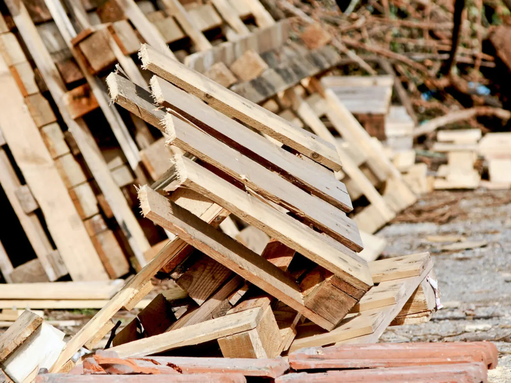

Shredding, mulch and fibre.
What can't go back into service gets processed. Timber goes in whole and comes out as mulch, fibre and feedstock — materials with buyers already waiting for them.
One input. Four products.
Timber is a raw material that most businesses pay to throw away. Processed properly, it has real end markets — which is exactly why we can take it off you at volume.
Recycled mulch
Shredded and screened timber mulch for landscaping, civil works and site use.
Oversize mulch
Coarse chip from wood chipping, for applications where a heavier grade is wanted.
Timber fibre
Processed fibre destined for paper and board manufacturing rather than landfill.
Biomass & pellet feedstock
Offcuts, chippings and residues processed into feedstock for renewable energy and industrial reuse.
What a thousand tonnes actually looks like.
1,000 tonnes of shredded timber
Roughly what a mid-sized site's non-reusable pallets add up to over a couple of years. At a mulch bulk density of about 250 kg per cubic metre, spread 75 mm deep:
We can come to the timber.
Moving bulky timber before it's processed is the most expensive part of the job. Where the volume justifies it, we process at source — the material is reduced on site, and what leaves is a fraction of what arrived.
- In-yard processing at our Geelong site
- Mobile and contract processing on your site
- Transfer station and recycling centre recovery
- Demolition and infrastructure project clean-up

If timber is still going to landfill, there's more work to do.
Treated, painted, laminated, engineered — the timbers that standard recycling pathways leave out. We assess these case by case, handle them safely, and keep working on better pathways rather than pretending the problem is solved.
- Laminated timbers
- Particle board and MDF
- Painted and treated timbers
- Composite and engineered wood
Timber that nobody else will take?
Send through what it is and where it is. If there's a pathway for it we'll find it, and if there isn't yet we'll tell you that straight.